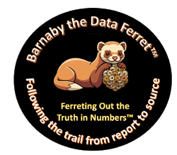

Modernize Legacy Systems. Automate Reporting. Trust the Numbers.
I help small businesses streamline reporting, automate processes, and gain real visibility into their financial performance — without adding complexity.
 |
|
 |
Featured Modernization Case Study
From Multiple Versions of the Truth to a Single Source of Truth
A healthcare staffing organization operating across New York, New Jersey, Maryland, and Westchester County relied on a 10-year-old Microsoft Access reporting environment, multiple vendor systems, manually maintained spreadsheets, and fragmented reporting processes to support daily operations.
More than 300 nurses, caregivers, managers, and executives depended on patient, operational, payroll, billing, and management reports that required significant manual effort to generate, validate, and distribute.
The challenge wasn't simply reporting. The challenge was restoring trust in the information.
The Investigation
Multiple reporting systems were reverse engineered, including MatrixCare, HHA Exchange, and HealthMEDX (now Netsmart), to identify how key business metrics were calculated and where critical reporting data originated.
- Mapped and standardized 12-20 executive reporting metrics
- Consolidated data from multiple vendor systems
- Validated patient, payroll, billing, and operational reporting
- Identified reporting inconsistencies caused by manual spreadsheet processes
- Created a centralized SQL Server reporting environment
The Solution
An automated reporting platform was developed using SQL Server, FTP automation, SQL Agent jobs, stored procedures, SAP BusinessObjects, and data integration processes that refreshed every night before staff arrived for work.
Results
Healthcare Professionals Supported
Operational Systems Integrated
Automated Overnight Reporting
Trusted Reporting Environment
Patient reporting, operational scorecards, payroll reporting, billing reporting, and executive dashboards were standardized, automated, and delivered automatically each morning.
By tracing every metric back to its source and rebuilding reporting logic from the ground up, the organization gained a centralized reporting platform capable of supporting operational decision-making across multiple locations.
Download the Full Case Study
Learn how disconnected systems, legacy reporting processes, manually maintained scorecards, and fragmented operational data were transformed into a centralized business intelligence platform.
Download PDFOperational Excellence Framework
See Real Examples of My Work
Explore dashboards, automated reports, and systems I've built for clients.


Case Study: Automated Financial Reporting System
How a small business gained full visibility into their financials.
Case Study: Automated Financial Reporting System
See My Work
Examples of dashboards, reports, and automation systems I've built.
What I Do
Providing expert consulting, system automation, and actionable insights for small businesses.
- Data integrity & reporting
- Process automation & workflow optimization
- Technical writing & documentation
- Corporate training & coaching
Systems & Software Expertise
QuickBooks, Access, SQL Server, Oracle EBS, MS Dynamics/Great Plains, SharePoint, Hyperion, and more.